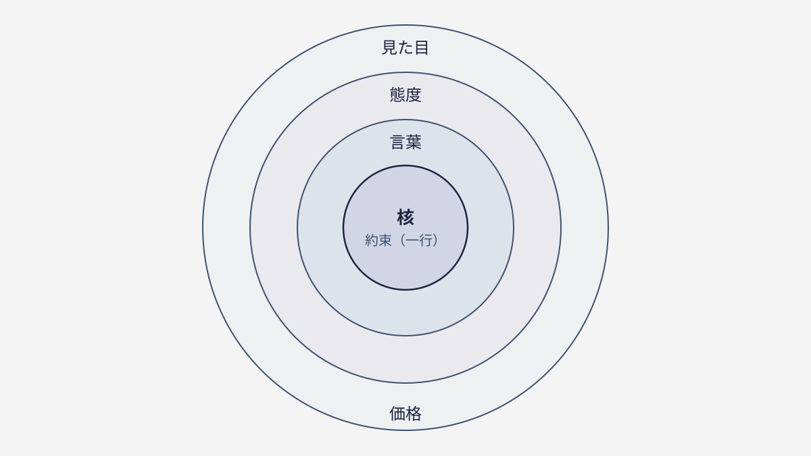

— 01 —世界観は「服選び」ではなく「性格」
人で例えると、世界観はその人の性格です。優しい人は、服装も言葉づかいも態度も、なんとなく一貫している。逆に、どんなに高い服を着ても言動がバラバラな人は「結局どんな人？」と掴めません。
ブランドの世界観も同じです。色やフォント（＝服）から入ると、「なぜその色なのか」を誰も説明できず、担当者が変わるたびに揺れてしまう。今日はかっこよく、明日はかわいく、と迷走して、結局“らしさ”が定まらないのです。
世界観は“選ぶ”ものではなく、何を信じているかから自然と滲み出るもの。だから、最初にやるべきはデザインツールを開くことではありません。自分たちがどんな価値観の会社なのかを、言葉で掴まえることです。
もう一つ大事なのは、世界観は“足し算”では作れないということ。おしゃれな要素を次々に盛るほど、かえって「結局どんな会社？」とぼやけていきます。個性の強い人が、あれもこれも主張せず、一本筋が通っているのと同じ。世界観は、盛ることではなく、貫くことで立ち上がります。
— 02 —だから、見た目の前に「一行」を決める
世界観づくりの出発点は、ビジュアルではなく「自分たちは何を大事にする会社か」を一行にすること。その一行が決まると、色・言葉・写真・接客の判断基準が自動的に生まれます。「その一行らしいか？」で、すべてを裁けるようになる。
たとえば「気取らず、本気」を掲げたとします。すると、堅すぎる敬語は“気取り”だから却下、盛りすぎたキラキラ写真も“本気っぽくない”から却下、と判断が一瞬でできる。逆にこの一行がないと、あらゆる場面で「どっちがいいか」を感覚で悩み続けることになります。
世界観とは、飾りつけのルール集ではなく、日々の判断のものさしなのです。だからこそ、デザインが得意でなくても作れます。必要なのはセンスではなく、「自分たちは何を大事にするか」を言い切る勇気。まずはその一行から始めてください。
— 03 —一貫させると、“らしさ”は勝手に伝わる
一行が決まり、すべての接点で守られると、受け手は言葉にできなくても「なんか、この会社っぽい」と感じ始めます。これが“らしさ”の正体。派手さではなく、一貫性が“らしさ”を作るのです。
逆に、媒体ごとに雰囲気が違う会社は、一つひとつがどれだけおしゃれでも、像が結ばれません。Webは洗練、SNSは砕けすぎ、営業資料は堅い——このズレを、お客さんは無意識に感じ取り、「結局どういう会社なんだろう」と距離を置いてしまいます。
世界観は、足し算（もっと盛る）ではなく、引き算と一貫（ぶらさない）で立ち上がります。新しい飾りを足す前に、まず“変えない一行”を決めて、それを全部の接点で守り抜く。地味に見えて、これが世界観づくりのいちばんの近道です。

— 04 —明日から、できる一歩
まずは、次の会議で「それ、うちらしい？ らしくない？」と口に出してみてください。判断のたびにこの問いを挟むだけで、“らしさ”は少しずつ輪郭を持ち始めます。大がかりなデザイン刷新は、その後でいいのです。
そして、いまの“らしさ”がどれくらい一貫して伝わっているかは、ブランドチェックで測れます。世界観づくりも、まずは現在地の確認から。5つの問いが、次に整えるべき一点を教えてくれます。